Function Alignment In Presence of
Compositional and Additive Noises
Ph.D Dissertation Defense
Department of Statistics, Florida State University
2025-06-20
Acknowledgement
- I am deeply grateful to Dr. Anuj Srivastava for his guidance throughout this research.
- Special thanks to Dr. Sutanoy Dasgupta, the co-author, for the research ideas and valuable assistance.
- I deeply appreciate Dr. Eric Klassen and Dr. Xiulin Xie for their support and willingness to serve as my committee members.
- I am sincerely thankful to my major advisor, Dr. Wei Wu, for his unwavering support, warm understanding, and encouragement in shaping my work and future path.
Thank you all for your support!
Table of Contents
Motivation
- Two sources of variation:
- Phase: temporal shifts of a function. (also known as compositional variation)
- Amplitude: changes in magnitude of a function.
(e.g., scaling, translation, additive noise process)
- Problems:
- Misalignment of phase leads to distorted key statistical summaries.
- With both compositional and additive noises, the alignment of the signals becomes challenging.
- Goal:
In presence of both noises,
\qquad(1) align multiple signals or (2) estimate the underlying signal robustly.
Past Functional Alignment Works
aligned noisy functions in original function space with various penalties. (e.g., smoothness etc.)
uses panalty constraining warping toward identity warping function.
↳
both^{(1,2)} approaches are sensitive to the penalty function and alignment weight.
Bayesian models
Projects: Two Paths Forward
On top of the SRVF framework, we introduce PPD, a visual tool, to explore the effects of different penalty weights on function alignment.
- Visualize how the alignment changes with varying penalty weights.
- Track the peaks in the aligned mean function to choose optimal penalty weights based on the stability of these peaks.
A probabilistic framework with prior distribution provides a flexible function-alignment under noisy observations.
- Enables the incorporation of prior knowledge
- Allows multiple plausible alignments
We enable a more robust registration under noisy observations than previous SRVF-based approaches.
Project 1
Signal estimation in the presence of phase and amplitude noises via PPD
Phase and Amplitude Variation Model
f_i(t)={\color{green}a_i} {\color{red}g}({\color{blue}\gamma_i}(t))+{\color{magenta}\epsilon_i}(t), \quad i=1,2,\ldots,n.
Additive noise function:
Generative Model Comparison
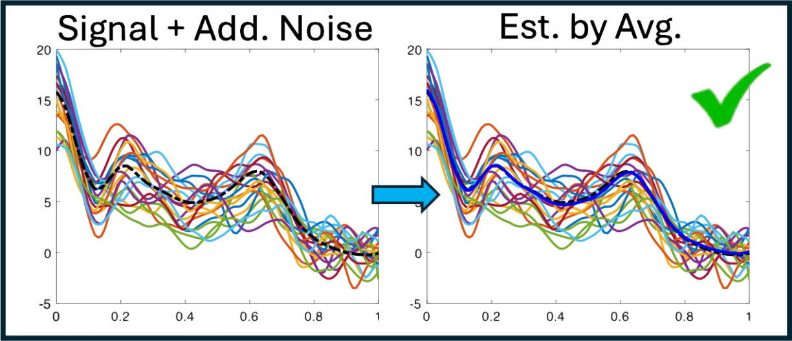
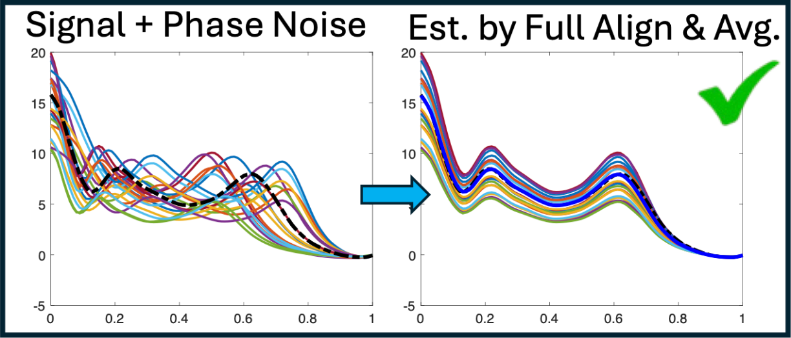
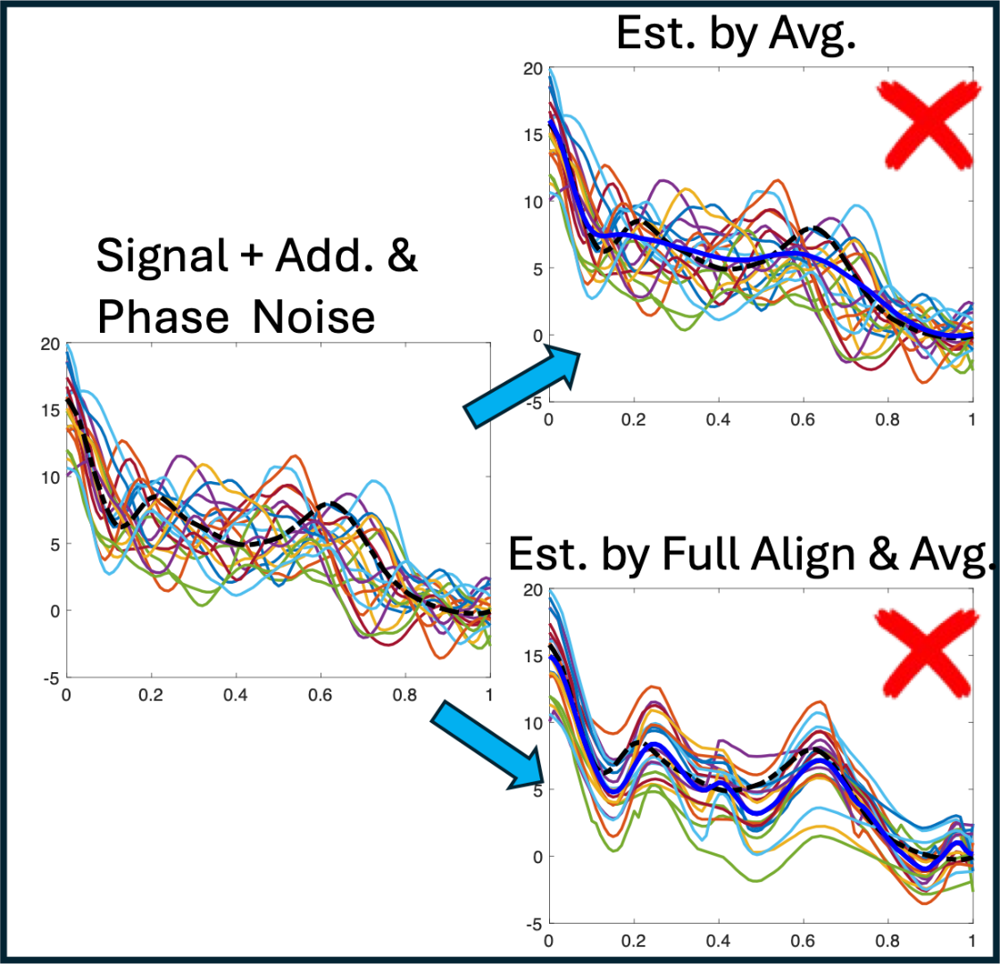
Penalized Functional Alignment (I)
Given an absolutely continuous function, f, we denote SRVF: q := \mathrm{srvf}(f) = \textrm{sign}(f^\prime)\sqrt{|f^\prime|}
Penalized function alignment in SRVF-framework with multiple absolutely continuous functions, \{f_i\}_{i=1}^n is formulated as:
\begin{align*} \begin{array}{lclc} \textsf{SRVFs of data: } & q_i := \mathrm{srvf}(f_i), &\qquad {\color{green}\textsf{scale factor: }} & {\color{green}c_i := \sqrt{a_i}}\\ {\color{magenta}\textsf{template function: }}& {\color{magenta}\bar{q} \in \mathbb{L}^2} & \qquad {\color{blue}\textsf{warping functions: }} & {\color{blue}\gamma_i \in \Gamma} \\ \textsf{penalty weight: }& \lambda \in \mathbb{R}^+ & \qquad \textsf{penalty choice:} & \mathcal{R}(\gamma_i) := \|1-\dot\gamma_i\|^2 \end{array} \end{align*}
Penalized Functional Alignment (II)
\qquad (Aligned functions) \quad f^*_{\lambda, i} = f_i \circ \gamma_{\lambda,i}^*\quad for \quad i=1,2,\ldots,n.
3.\,\,Update the template function \bar{q} given \{f^*_{\lambda, i}\}_{i=1}^n: \quad \bar{q} \leftarrow \frac{1}{n}\sum_{i=1}^n \mathrm{srvf}(f^*_{\lambda,i})
4.\,\,Repeat 1-3 until convergence in the objective function.
The quantity of interest is the partial elastic mean :
Brief Recap
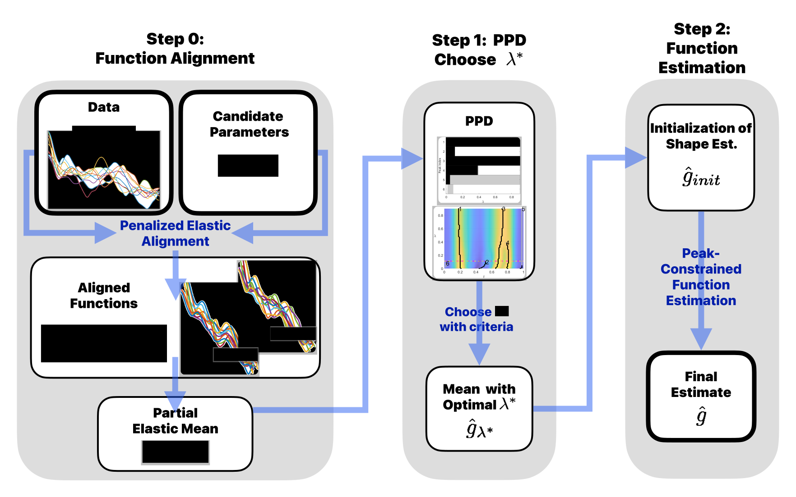
Step 0: Penalized Elastic Signal Alignment (PESA)
Sequential alignment algorithm
Given the candidate penalty weights \{\lambda_1,...\lambda_L = \lambda_{\mathrm{max}}\}, we compute the partial elastic mean \hat{g}_\lambda and update the alignment sequentially.
- Computation order of the penalty: \lambda_L,\lambda_{L-1},…,\lambda_1
- At step k: compute \hat{g}_{\lambda_k} using the previous steps alignment.
- Sequentially progress alignment from no alignment to the fully elastic alignment.
\textsf{\textbf{Input:}}
\textsf{\textbf{Output:}}
\qquad\qquad q_i \leftarrow \begin{cases} \mathtt{srvf}(f_i) & \textsf{\text{if }} k = L \\ \mathtt{srvf}(\tilde{f}_{\lambda_{k+1}, i}) & \textsf{\text{otherwise}} \end{cases}\ \ , \qquad c_i^* \leftarrow 1
\qquad \textsf{\textbf{end}}
\qquad \bar{q} \leftarrow \begin{cases} \frac{1}{n}\sum q_i & \textsf{\text{if }} k = L \\ \bar{q}_{\lambda_{k+1}} & \textsf{\text{otherwise}} \end{cases}
\qquad \textsf{\textbf{for }} i = 1 \textsf{\textbf{ to }}n:
\qquad\qquad q_i \leftarrow \begin{cases} {\color{red}\mathtt{srvf}(f_i)} & \textsf{\text{if }} k = L \\ \mathtt{srvf}(\tilde{f}_{\lambda_{k+1}, i}) & \textsf{\text{otherwise}} \end{cases}\ \ , \qquad c_i^* \leftarrow 1
\qquad \textsf{\textbf{end}}
\qquad \bar{q} \leftarrow \begin{cases} {\color{red}\frac{1}{n}\sum q_i} & \textsf{\text{if }} k = L \\ \bar{q}_{\lambda_{k+1}} & \textsf{\text{otherwise}} \end{cases}
\qquad \textsf{\textbf{for }} i = 1 \textsf{\textbf{ to }} n:
\qquad\qquad \gamma_{\lambda_k,i}^* \leftarrow \mathrm{argmin}_\gamma \big[ \|\bar{q} - c_i^*(q_i \circ \gamma)\|^2 + \lambda_k \mathcal{R}(\gamma) \big]
\qquad\qquad f_i^* \leftarrow \tilde{f}_{\lambda_{k-1}, i} \circ \gamma_{\lambda_k,i}^* , \quad q_i^* \leftarrow \mathtt{srvf}(f_i^*) , \quad c_i^* \leftarrow \frac{\langle \bar{q},\ \, q_i^* \rangle}{\langle q_i^*,\ \ q_i^* \rangle}
\qquad \textsf{\textbf{end}}
\qquad\qquad \textsf{\textbf{if }} \epsilon > tol: \bar{q} \leftarrow \bar{q}^*
\qquad \textsf{\textbf{for }} i = 1 \textsf{\textbf{ to }} n:
\qquad\qquad q_i \leftarrow \begin{cases} {\color{red}\mathtt{srvf}(f_i)} & \textsf{\text{if }} k = L \\ \mathtt{srvf}(\tilde{f}_{\lambda_{k+1}, i}) & \textsf{\text{otherwise}} \end{cases}\ \ , \qquad c_i^* \leftarrow 1
\qquad \textsf{\textbf{end}}
\qquad \bar{q} \leftarrow \begin{cases} {\color{red}\frac{1}{n}\sum q_i} & \textsf{\text{if }} k = L \\ \bar{q}_{\lambda_{k+1}} & \textsf{\text{otherwise}} \end{cases}
\qquad \bar{\gamma}^{-1} \leftarrow (\frac{1}{n} \sum \gamma_{\lambda_k, i}^*)^{-1}\ \ , \quad \bar{q}_{\lambda_k} \leftarrow \bar{q} \circ \bar{\gamma}^{-1} (centering)
\textsf{\textbf{end}}
\qquad \textsf{\textbf{for }} i = 1 \textsf{\textbf{ to }} n:
\qquad\qquad q_i \leftarrow \begin{cases} \mathtt{srvf}(f_i) & \textsf{\text{if }} k = L \\ \mathtt{srvf}(\tilde{f}_{\lambda_{k+1}, i}) & \textsf{\text{otherwise}} \end{cases}\ \ , \qquad c_i^* \leftarrow 1
\qquad \textsf{\textbf{end}}
\qquad \bar{q} \leftarrow \begin{cases} \frac{1}{n}\sum q_i & \textsf{\text{if }} k = L \\ \bar{q}_{\lambda_{k+1}} & \textsf{\text{otherwise}} \end{cases}
\qquad \bar{\gamma}^{-1} \leftarrow (\frac{1}{n} \sum \gamma_{\lambda_k, i}^*)^{-1}\ \ , \quad \boldsymbol{\bar{q}_{\lambda_k}} \leftarrow \bar{q} \circ \bar{\gamma}^{-1} (centering)
\qquad \textsf{\textbf{for }} i = 1 \textsf{\textbf{ to }} n: \quad \boldsymbol{\tilde{f}_{\lambda_k, i}} \leftarrow f_i^* \circ \bar{\gamma}^{-1} (alignment)
\qquad \textsf{Collect}\quad\hat{g}_{\lambda_k} \leftarrow \frac{1}{n} \sum \tilde{f}_{\lambda_k, i} (aligned mean)
{\color{black}\textsf{\textbf{end}}}
Step 1: Persistent Peak Diagrams (PPD)
Significance of Peaks
The significance of a peak is determined by its relative curvature at the peak location and a predefined threshold value.
Persistence of Peaks
Persistence measures how long a peak remains significant as the penalty weight \lambda varies.
A peak is considered persistent if its classification remains consistent with that of the most persistent peak across values of persistence measurements.
Selection of \lambda via PPD
- Scatter points: Partially aligned functions, \{ùëì^*_{\lambda^*,ùëñ}\}
- Blue Curve: Mean of partial elastic mean, \hat{g}_{\lambda^*}
- Cyan Curve: Initial shape function, \hat{g}_{\mathrm{init}}
- Red Curve: Ground truth, g
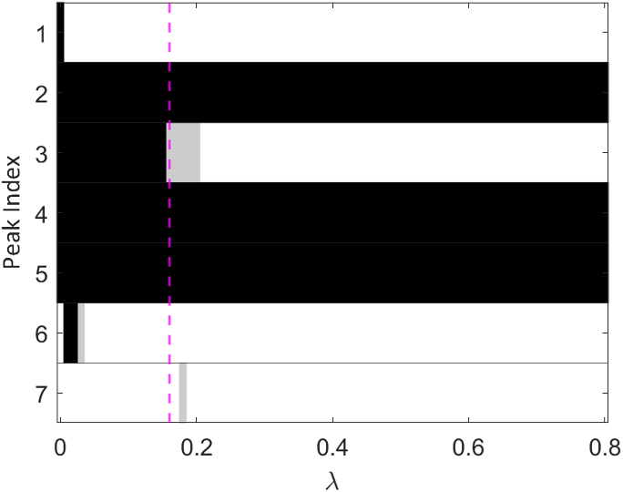
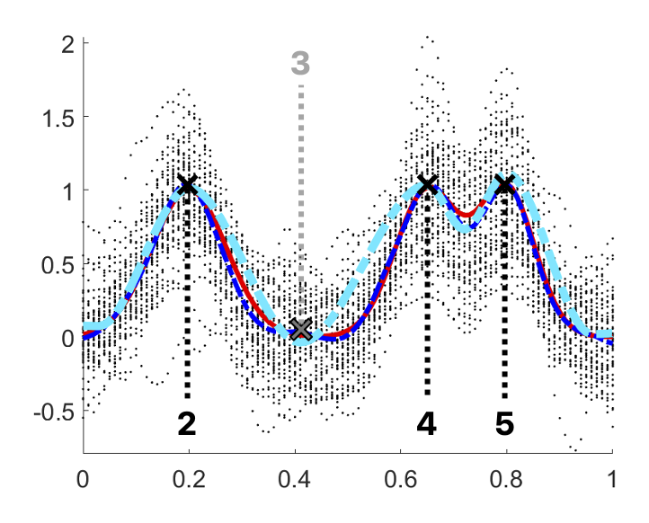
- Magent line: the selected penalty weight, \lambda^*.
Step 2: Estimation of the underlying signal g
Signal estimation of g is feasible based on the \hat{g}_{\lambda^*}
Results
Project 2
Bayesian registration of functions with compositional and additive noises
Introduction
To earn the robustness in the alignment, our approach resorts to:
Bayesian model to quantify the uncertainty in the alignment process.
Centered log-ratio (CLR) representation of warping representations to achieve mapping to a subspace of \mathbb{L}^2 via isometrically isomorphism.
Original function space (\boldsymbol{f}-space) to compute the \mathbb{L}^2 distances.
Registration Frameworks
Three main distinctions in our registration framework from previous methods:
Deterministic vs Bayesian Method
SRVF vs CLR representations of \gamma
SRVF-space (q-space) vs Original-function-space (f-space)
(1)\quadDeterministic vs Bayesian Method
A deterministic method (e.g., dynamic programming) finds a single optimal warping function \gamma that maximizes the likelihood.
(Flexibility Issues)
- Does not quantify uncertainty in the alignment process.
- Fails to represent multiple plausible alignments.
(Computational Considerations)
- DP has quadratic time complexity, making it inefficient for large numbers of discrete points.
- DP does not account for smoothness, often resulting in undesirable or jagged warpings.
The Bayesian framework offers a probabilistic alternative with advantages in flexibility and interpretability.
- (Flexibility Advantages)
- Enables uncertainty quantification through posterior distributions.
- Captures multiple plausible alignments by a comprehensive exploration of warping function space.
- Incorporates of the prior information of warping functions.
- (Computational Considerations)
Offers linear computational cost in the number of discrete points, making it more efficient for long functions.
Allows explicit modeling of smooth warping functions via prior design.
(2)\quadSRVF vs CLR representations of \gamma
Previous Bayesian registration approaches 1 maps the warping functions to the SRD manifold \mathbb{S}^+_{\infty} = \left\{ q_\gamma \in \mathbb{L}^2 \,\middle|\, q_\gamma(t) \geq 0,\; \int_0^1 q_\gamma^2(t)\, dt = 1 \right\} \qquad \text{where } \quad q_\gamma(t) = \mathtt{srvf}(\gamma).
Gaussian Process (GP) prior for warping functions on the tangent space at \gamma_{\mathrm{id}}
Literatures2 addressed the SRVF representation may cause bias and inefficience in computation in posterior inference due to:
- geometric distortion
- improper posterior sampling
Ma, Zhou, and Wu (2024) proposed the use of CLR3 for warping function representation.
\,\,•\,\,\,Consider \Gamma_1 \subset \Gamma with bounded derivatives s.t. \Gamma_1 = \left\{ \gamma: [0,1] \rightarrow [0,1] \mid \gamma(0) = 0, \gamma(1) = 1, 0 < m_\gamma<\dot\gamma(t) < M_\gamma < \infty\right\}.
\,\,•\,\,\,Definitions of linear operations and inner product on \Gamma_1.
\,\,\, \oplus_\Gamma: \Gamma_1 \times \Gamma_1 \rightarrow \Gamma_1
\,\,\, \odot_\Gamma: \mathbb{R} \times \Gamma_1 \rightarrow \Gamma_1
\,\,•\,\,\,Let H(0,1) \subset \mathbb{L}^2([0,1]) be the space of functions with zero integral over [0,1] and bounded functions:
\quad For all \gamma \in \Gamma_1, \,\, h \in H(0,1),
\psi(\gamma)(t) = \log(\dot\gamma(t)) - \int_0^1 \log(\dot\gamma(s))ds, \qquad \psi^{-1}(h)(t) = \frac{ \int_0^t \exp{ (h(s)) } ds }{ \int_0^1 \exp{ (h(\tau)) } d\tau}
\quad For all f,\, g \in \Gamma_1 and \alpha \in \mathbb{R},
\psi(f \oplus_{\Gamma} g) = \psi(f) + \psi(g), \,\,\, \psi(\alpha \odot_\Gamma f) = \alpha \cdot \psi(f)
\,\,•\,\,\,
\,\,•\,\,\,
CLR does not require truncation to handle improper sampling, improving computational efficiency and posterior inference. (Example)
(3)\quad q-space vs f-space
It aligns functions by using \mathbb{L}^2 metric in the SRVF space (\boldsymbol{q}-space)
(Robustness Issue)
The SRVF transformation is a function of the first derivative, leaving high sensitivity to noise.
(Previous approaches):
pre-smoothing data but a mere smoothing individual functions may cause over- or under-smoothing.
penalized elastic alignment but to choose a proper penalty weight becomes a sensitive issue.
We perform alignment directly in the original function space rather than SRVF space.
The pinching effect arises when \dot{\gamma}(t) \to 0, causing extreme compression and distortion of function features. (Example)
By placing a GP prior on the CLR-transformed warping \psi(\gamma), we ensure:
- \dot{\gamma}(t) > 0 almost surely (due to \log \dot{\gamma}),
- Prevented extreme compression and distortion of functions with the bounded derivative.
This Bayesian formulation systematically avoids pinching effect, unlike the penalty-based optimization methods that only weakly enforce identity proximity.
Methods
Pairwise Alignment
Multiple-Function Alignment
Underlying Signal Estimation
Pairwise Alignment
The likelihood model for pairwise alignment y_2([t]) - (y_1 \circ \gamma)([t]) \mid \gamma \sim \mathcal{N}(\mathbf{0},\sigma^2\mathbf{I}) \begin{align*} \begin{array}{lcl} \textsf{noisy data: }& y_1,y_2 \in \mathbb{L}^2, &\qquad \textsf{ discretized time: }& [t] \in \mathbb{R}^{T}\\ \textsf{error variance: } & \sigma^2 \in \mathbb{R}^+, & \qquad \textsf{ identity matrix: }& \mathbf{I}\in\mathbb{R}^{T\times T} \\ \textsf{warping function: } & \gamma \in \Gamma_1 \end{array} \end{align*}
Gaussian Process prior for warping function \gamma: h_\gamma \sim \mathcal{GP}(\mu_h, \mathcal{K}_h), \textsf{ where } h_\gamma = \psi(\gamma)
Posterior Inference for Functions (I)
We adopt the Z-mixture preconditioned Crank–Nicolson (Z-pCN)1 method, which is a Bayesian registration framework for pairwise alignment of functions. Lu et al., 2017; Ma et al., 2024] as a MCMC method for efficient posterior sampling.
Finite-dimensional case:
Posterior density of parameter \theta given data y is defined by Bayes’ rule: p(\theta \mid y) \propto p(y \mid \theta) \pi(\theta)Infinite-dimensional case: (e.g., functional parameters)
The posterior and prior densities are not well-defined, making direct inference infeasible.
Posterior Inference for Functions (II)
- preconditioned Crank–Nicolson (pCN)1
- Extends Metropolis-Hastings sampling with Gaussian-based prior measure to function spaces.
- is robust to time-discretization. (its performance is stable with the discretization resolution.)
- The pCN method works with a Gaussian Process prior and a likelihood, where the acceptance probability depends only on the finite-dimensional likelihood (by time discretization), enabling feasible sampling even in infinite-dimensional spaces.
Posterior Inference for Pairwise Alignment
- The posterior measure \mu is absolutely continuous with respect to the prior measure \mu_0, and the Radon-Nikodym derivative is given by:
\frac{d\mu}{d\mu_0}(h_\gamma) \propto \mathcal{L}(h_\gamma; y_1, y_2)
- The likelihood function \mathcal{L}(h_\gamma; y_1, y_2) is defined as:
\mathcal{L}(h_\gamma; y_1, y_2) \propto \exp\left\{ -\frac{1}{2\sigma^2} \left\| y_2([t]) - \left(y_1 \circ \psi^{-1}(h_\gamma)\right)([t]) \right\|^2 \right\},
- With a random weight \beta \sim \pi_{\beta} in the interval (0,1), the proposal h_\gamma' is:
Acceptance probability depends only on \mathcal{L} that is \min\left(1, \frac{\mathcal{L}(h_\gamma'; \ y_1,y_2)}{\mathcal{L}(h_\gamma;\ y_1, y_2)}\right)
\beta \rightarrow 0 lead to small changes from h_\gamma in the previous step.
\beta \rightarrow 1 yield more exploratory moves in proposal for faster mixing and jumps among local modes in the posterior distribution.
Pairwise Alignment Algorithm (Simulation Results)
\qquad \qquad \textsf{prior mean function and covariance operator for warpings} \,\, \mu_h, \,\, \mathcal{K}_h; \quad \textsf{error variance} \,\, \sigma^2
{\color{gray}\mathtt{1}.} \qquad h^{(1)} = \mu_h; \quad \gamma_h^{(1)} = \psi^{-1}(h^{(1)})
{\color{gray}\mathtt{3}.} \qquad \qquad \textsf{Generate }\beta_h \sim \pi_{\beta_h} \textsf{ and }\xi \sim GP(0, \mathcal{K}_h)
{\color{gray}\mathtt{4}.} \qquad\qquad \textsf{Propose }h' = \sqrt{1-\beta_h^2} \, h^{(m)} + \beta_h \xi
{\color{gray}\mathtt{5}.} \qquad\qquad \textsf{Update }h^{(m+1)} = \begin{cases} h' & \textsf{with probability }\\ h^{(m)} & \textsf{with probability } 1 - \alpha_h \end{cases} \alpha_h
{\color{gray}\mathtt{6}.} \qquad\qquad \gamma_{h}^{(m+1)} = \psi^{-1}(h^{(m+1)})
Multiple-Function Alignment
The likelihood model for pairwise alignment y_i([t]) - (g \circ \gamma_i^{-1})([t]) \mid g, \gamma_i \sim \mathcal{N}(\mathbf{0}, \sigma^2\mathbf{I}) \quad \text{for } i = 1, \ldots, N. \begin{align*} \begin{array}{lcl} \textsf{noisy data: }& y_1,...,y_N \in \mathbb{L}^2, &\qquad \textsf{ discretized time: }& [t] \in \mathbb{R}^{T}\\ \textsf{error variance: } & \sigma^2 \in \mathbb{R}^+, & \qquad \textsf{ identity matrix: }& \mathbf{I}\in\mathbb{R}^{T\times T} \\ \textsf{warping functions: } & \gamma_1,...,\gamma_N \in \Gamma_1, & \qquad \textsf{ template function: }& g \in \mathbb{L}^2 \end{array} \end{align*}
Gaussian Process prior for warping function \gamma_i and g: \begin{align*} h_{\gamma_i},...,h_{\gamma_N} & \overset{\mathrm{i.i.d.}}{\sim} \mathcal{GP}(\mu_h, \mathcal{K}_h)\quad \textsf{ where } \quad h_{\gamma_i} = \psi(\gamma_i)\\ g & \sim \mathcal{GP}(\mu_g, \mathcal{K}_g), \end{align*}
Posterior Inference for Multiple-Function Alignment
The prior and posterior measures are supported on the product space \mathbb{L}^2([0,1])^{N+1}, corresponding to the tuple (h_{\gamma_1}, \ldots, h_{\gamma_N}, g).
The posterior measure \mu is absolutely continuous with respect to the prior measure \mu_0, and the Radon-Nikodym derivative is given by:
- By Z-pCN, h_{\gamma_i} and g are updated sequentially. (Metropolis-within-Gibbs sampling).
Centering with CLR
- To ensure identifiability, one requires the warping functions to be centered around the identity \gamma_{\text{id}}.
- SRVF Framework
- The center of orbit is defined via the Karcher mean of \mathtt{srvf}(\gamma_i)
- SRVF’s isometry under warping group action allows to shift its Karcher mean at \mathtt{srvf}(\gamma_{\text{id}}). allows to shift its Karcher mean at \mathtt{srvf}(\gamma_{\text{id}}).
- CLR Framework
- The CLR transformation lacks isometry but enjoys a mean-preserving property under warping group actions.1 \mathbb{E}[\psi(\gamma_i \circ \gamma)] = \psi(\bar\gamma \circ \gamma) \quad \text{where } \psi(\bar\gamma) = \mathbb{E}[\psi(\gamma_i)]
- Here, \gamma is a free variable you can choose. You choose it such that the updated warpings {\gamma_i \circ \gamma} will have mean 0 (i.e., \mathbb{E}[\psi(\gamma_i \circ \gamma)] = 0.)
Multiple Alignment Algorithm (Simulation Results)
\qquad \qquad \textsf{prior mean and covariance for warpings and templates} \,\, \mu_h, \,\, \mu_g, \,\, \mathcal{K}_h, \,\, \mathcal{K}_g; \qquad \textsf{error variance} \,\, \sigma^2
{\color{gray}\mathtt{3}.} \qquad \qquad \, \textsf{\textbf{For }} i = 1 \textsf{\textbf{ to }} N:
{\color{gray}\mathtt{4}.} \qquad \qquad \qquad \, \textsf{Generate }\beta_{h_i} \sim \pi_{\beta_h} \textsf{ and }\xi \sim GP(0, \mathcal{K}_h)
{\color{gray}\mathtt{5}.} \qquad\qquad \qquad \, \textsf{Propose }h_i' = \sqrt{1-\beta_{h_i}^2} \, h^{(m)} + \beta_{h_i} \xi
{\color{gray}\mathtt{6}.} \qquad\qquad \qquad \, \textsf{Update }h_i^{(m+1)} = \begin{cases} h'_i & \text{with probability } \\ h^{(m)}_i & \text{with probability } 1 - \alpha_h \end{cases} \alpha_h
{\color{gray}\mathtt{7}.} \qquad\qquad \qquad \gamma_{h_i}^{(m+1)} = \psi^{-1}(h_i^{(m+1)})
Underlying Signal Estimation
Generative data model: y_i([t]) = c_i g \circ \gamma_i^{-1}([t]) + e_i + \epsilon_i([t]), \quad \epsilon_i([t]) \sim \mathcal{N}(\mathbf{0}, \sigma^2\mathbf{I}) \quad \text{for} \quad i = 1, \ldots, N \begin{align*} \begin{array}{lcl} \textsf{noisy data: }& y_1,...,y_N \in \mathbb{L}^2, &\qquad \textsf{ discretized time: }& [t] \in \mathbb{R}^{T}\\ \textsf{error variance: } & \sigma^2 \in \mathbb{R}^+, & \qquad \textsf{ identity matrix: }& \mathbf{I}\in\mathbb{R}^{T\times T} \\ \textsf{scale factor: } & c_1,...,c_N \in \mathbb{R}^+, & \qquad \textsf{ translation: }& e_1,...,e_N \in \mathbb{R} \\ \textsf{warping functions: } & \gamma_1,...,\gamma_N \in \Gamma_1, & \qquad \textsf{ template function: }& g \in \mathbb{L}^2 \end{array} \end{align*}
For identifiability, we assume \mathbb{E}[c_i] = 1, \mathbb{E}(e_i) = 0, and \mathbb{E}[\phi(\gamma_i)] = 0.
GP prior for warping function \gamma_i and g as in the multiple-function alignment.
The prior for the scale factor c_i and translation e_i are given by: c_i,...,c_N \overset{\mathrm{i.i.d.}}{\sim}\textsf{Gamma}(\textsf{shape: } \alpha_c, \textsf{ scale: } \theta_c), \qquad e_i,...,e_N \overset{\mathrm{i.i.d.}}{\sim} \mathcal{N}(0, \sigma^2_e)
Posterior Inference for Underlying Signal Estimation (I)
The parameter probability measure for tuple (h_{\gamma_1}, \ldots, h_{\gamma_N}, g, c_1, \ldots, c_N, e_1, \ldots, e_N) is supported on the product space \mathbb{L}^2([0,1])^{N+1} \times \mathbb{R}^{2N}.
The posterior measure \mu is absolutely continuous with respect to the prior measure \mu_0, and the Radon-Nikodym derivative is given by:
\frac{d\mu}{d\mu_0}(h_{\gamma_{1:N}}, g, c_{1:N}, e_{1:N}) \propto \prod_{i=1}^N \mathcal{L}(h_{\gamma_i}, g, c_i, e_i;\ y_i)
\mathcal{L}(h_{\gamma_i}, g, c_i, e_i; \ y_i) \propto \exp\Big\{ - \frac{1}{2\sigma^2}{\left\|y_i([t]) - c_i (g \circ \gamma_{h_i}^{-1})([t]) - e_i\right\|^2} \Big\}
- Identically to the multiple-function alignment, h_{\gamma_i} and g are updated sequentially via Z-pCN.
Posterior Inference for Underlying Signal Estimation (II)
- Translation update (e_i)
Conjugacy allows a closed-form Gaussian update: \mu_{e_i\mid y} = \sigma^2_{e \mid y} \left( \frac{1}{\sigma_e^2} \cdot \bm{1}^\top \left( y_i([t]) - c_i (g \circ \gamma_{h_i}^{-1})([t]) \right) \right), \quad \sigma^2_{e \mid y} = \left( \frac{1}{\sigma_e^2} + \frac{T}{\sigma^2} \right)^{-1}.
- Scale update (c_i)
MH step with Gamma prior
- Proposal with log-normal c_i' \sim \text{Log}\mathcal{N}(\log c_i, \sigma^2_{\text{prop}}) \quad \text{where } u_i = \log c_i.
- Prior density in log-space: \qquad \pi_U(u_i) = \frac{1}{\Gamma(\alpha_c)\theta_c^{\alpha_c}} \cdot e^{\alpha_c u_i} \cdot \exp\left(-\frac{e^{u_i}}{\theta_c}\right)
- MH acceptance: \qquad \alpha_c = \min\left(1, \frac{ \mathcal{L}(c_i’, h_{\gamma_i}, e_i, g;\ y_i)\ \pi_U(\log c_i’)} {\mathcal{L}(c_i, h_{\gamma_i}, e_i, g;\ y_i)\ \pi_U(\log c_i)} \right)
Underlying Signal Estimation Algorithm
\qquad \qquad \textsf{prior mean and covariance for warpings and templates} \,\, \mu_h, \,\, \mu_g, \,\, \mathcal{K}_h, \,\, \mathcal{K}_g; \qquad \textsf{error variance} \,\, \sigma^2
\textsf{\textbf{Output: }} \quad \textsf{Posterior samples} \,\, \{\gamma^{(m)}\}_{m=2}^{M+1}
{\color{gray}\mathtt{ 1}.} \qquad \, g^{(1)} = \mu_g; \quad h_{1:N}^{(1)} = \mu_h; \quad \gamma_{h_{1:N}}^{(1)} = \psi^{-1}(h_{1:N}^{(1)}); \quad c_{1:N} = 1; \quad e_{1:N}= 0
{\color{gray}\mathtt{ 2}.} \qquad \, \textsf{\textbf{For }} m = 1\textsf{\textbf{ to }}M:
{\color{gray}\mathtt{ 3}.} \qquad \qquad \,\textsf{\textbf{For }} i = 1 \textsf{\textbf{ to }} N:
{\color{gray}\mathtt{ 5}.} \qquad \qquad \qquad \, \textsf{Propose }h_i' = \sqrt{1-\beta_{h_i}^2} \, h^{(m)} + \beta_{h_i} \xi
{\color{gray}\mathtt{ 6}.} \qquad\qquad \qquad \,\textsf{Update }h_i^{(m+1)} = \begin{cases} h'_i & \textsf{with probability } \\ h^{(m)}_i & \textsf{with probability } 1 - \alpha_h \end{cases} \alpha_h
{\color{gray}\mathtt{ 7}.} \qquad\qquad \qquad\, \gamma_{h_i}^{(m+1)} = \psi^{-1}(h_i^{(m+1)})
{\color{gray}\mathtt{9}.} \qquad \qquad \qquad \, \textsf{Propose }c_i' \sim \text{Log}\mathcal{N}(u_i^{(m)}, \sigma^2_{\text{prop}}) \textsf{ where } u_i^{(m)} = \log c_i^{(m)}
{\color{gray}\mathtt{10}.} \qquad \qquad \quad \,\,\,\, \textsf{Update }c_i^{(m+1)} = \begin{cases} c'_i & \textsf{with probability } \\ c^{(m)}_i & \textsf{with probability } 1 - \alpha_c \end{cases} \alpha_c
{\color{gray}\mathtt{12}.} \qquad \qquad \bar{c} = \sum_{i=1}^Nc^{(m+1)}_{i}/N; \quad \bar{\gamma} = \psi^{-1}\left(\frac{1}{N}\sum_{i=1}^N h_i^{(m+1)}\right)
{\color{gray}\mathtt{13}.}\qquad \qquad c^{(m+1)}_{1:N} \leftarrow c^{(m+1)}_{1:N}/{\bar{c}}; \quad g^{(m)} \leftarrow \bar{c} g^{(m)} \circ \bar{\gamma}^{-1}; \quad \gamma_{h_{1:N}}^{(m+1)}\leftarrow \gamma_{h_{1:N}}^{(m+1)} \circ \bar{\gamma}^{-1}; \quad h_{1:N}^{(m+1)} \leftarrow \psi(\gamma_{h_{1:N}}^{(m+1)})
{\color{gray}\mathtt{15}.}\qquad \qquad \textsf{Propose } {g}' = \mu_g +\sqrt{1-\beta_{g}^2} \, ({g}^{(m)}-\mu_g) + \beta_{g} \zeta
{\color{gray}\mathtt{16}.}\qquad \qquad \textsf{Update } g^{(m+1)} = \begin{cases} g' & \textsf{with probability } \\ g^{(m)} & \textsf{with probability } 1 - \alpha_g \end{cases} \alpha_g
Underlying Signal Estimation Algorithm (Simulation Results)
\qquad \qquad \textsf{prior mean and covariance for warpings and templates} \,\, \mu_h, \,\, \mu_g, \,\, \mathcal{K}_h, \,\, \mathcal{K}_g; \qquad \textsf{error variance} \,\, \sigma^2
\textsf{\textbf{Output: }} \quad \textsf{Posterior samples} \,\, \{\gamma^{(m)}\}_{m=2}^{M+1}
{\color{gray}\mathtt{ 1}.} \qquad \, g^{(1)} = \mu_g; \quad h_{1:N}^{(1)} = \mu_h; \quad \gamma_{h_{1:N}}^{(1)} = \psi^{-1}(h_{1:N}^{(1)}); \quad c_{1:N} = 1; \quad e_{1:N}= 0
{\color{gray}\mathtt{ 2}.} \qquad \, \textsf{\textbf{For }} m = 1\textsf{\textbf{ to }}M:
{\color{gray}\mathtt{ 3}.} \qquad \qquad \,\textsf{\textbf{For }} i = 1 \textsf{\textbf{ to }} N:
{\color{gray}\mathtt{9}.} \qquad \qquad \qquad \, \textsf{Propose }c_i' \sim \text{Log}\mathcal{N}(u_i^{(m)}, \sigma^2_{\text{prop}}) \textsf{ where } u_i^{(m)} = \log c_i^{(m)}
{\color{gray}\mathtt{10}.} \qquad \qquad \quad \,\,\,\, \textsf{Update }c_i^{(m+1)} = \begin{cases} c'_i & \textsf{with probability } \\ c^{(m)}_i & \textsf{with probability } 1 - \alpha_c \end{cases} \alpha_c
{\color{gray}\mathtt{11}.} \qquad\qquad \textsf{\textbf{End}}
{\color{gray}\mathtt{12}.} \qquad \qquad \bar{c} = \sum_{i=1}^Nc^{(m+1)}_{i}/N; \quad \bar{\gamma} = \psi^{-1}\left(\frac{1}{N}\sum_{i=1}^N h_i^{(m+1)}\right)
{\color{gray}\mathtt{13}.}\qquad \qquad c^{(m+1)}_{1:N} \leftarrow c^{(m+1)}_{1:N}/{\bar{c}}; \quad g^{(m)} \leftarrow \bar{c} g^{(m)} \circ \bar{\gamma}^{-1}; \quad \gamma_{h_{1:N}}^{(m+1)}\leftarrow \gamma_{h_{1:N}}^{(m+1)} \circ \bar{\gamma}^{-1}; \quad h_{1:N}^{(m+1)} \leftarrow \psi(\gamma_{h_{1:N}}^{(m+1)})
Overall Advantages of our Bayesian Framework
Models \gamma_i as a random variable to reflect uncertainty in alignment
Provides robustness to additive noise process without pinching effect.(Example)
Allows flexibility in modeling the warping function
Eliminates the need for pre-smoothing data before alignment.
Supports a broader class of functional data (i.e., \mathbb{L}^2), whereas SRVF-based approaches require absolute continuity to ensure well-defined derivatives.
Future Work
- Explore more real datasets
- Extend and compare to \infty-HMC and Z-pCN inference
- Introduce non-Gaussian priors via basis expansions
References
Appendix
Significance of Peaks
- We define strength of a peak in any absolutely continuous function f(t_0) at a location of a peak, t_0 \in [0,1]:
\frac{-{f}^{\prime\prime}(t_0)}{\max_{t\in[0,1]}{{f}^{\prime\prime}(t)}}
A strength always lies in the interval [0,1].
A peak is insignificant if the strength of a peak is less than a certain threshold, \tau.
Threshold Selection:
- We need an adaptable hyperparameter derived from the dataset.
- For i = 1,...,n, we collect all strengths of peaks in f_i.
- We choose \tau to be the p-th percentile of such strength collection.
Persistence of Peaks
- We define the persistence measure of a peak k as:
p_k = \left| \left\{ 0 \leq \lambda \leq \lambda_{\max} \mid \textsf{peak } k \textsf{ in } \hat{g}_{\lambda} \textsf{ is significant} \right\} \right|.
A persistent peak in g should remain visible in \hat{g}_{\lambda} over a broad range of \lambda.
We apply a clustering approach to determine \lambda^* in a data-driven manner.
partition the set \{ p_k \} into two groups using hierarchical clustering (Ward’s method).
The cluster with larger values is labeled as persistent, while the other is non-persistent. We then define \lambda^* as the smallest \lambda that retains the persistent peaks in \hat{g}_{\lambda}.
Estimation of the underlying signal
Signal estimation of g is feasible based on the \hat{g}_{\lambda^*}

\qquad\qquad\qquad \textsf{Connect the } m \textsf{ peaks (and corresponding valleys) of } \hat{g}_{\lambda^*} \textsf{ linearly}
\qquad\qquad\qquad \textsf{to form a piecewise linear curve.}
Illustration of FPCA in SRD vs CLR

Raw Functions

Resamples via CLR

Resamples via SRVF
- Two orthonormal bases \{\phi_1(t), \phi_2(t)\} = \left\{ \sqrt{2}\cos(2\pi t), \sqrt{2}\sin(2\pi t) \right\} for t \in [0, 1].
- Each function \gamma_i = \psi^{-1}(c_{1,i}\phi_1 + c_{2,i}\phi_2)
- c_{1,i} \overset{\mathrm{i.i.d.}}{\sim} \mathcal{N}(0, 0.6^2) and c_{2,i} \overset{\mathrm{i.i.d.}}{\sim} \mathcal{N}(0, 0.4^2) for i = 1, \dots, 100.
- Improper SRVF-based resampled functions (right) are highlighted in red.
Robustness by the use of f-space
In noise-less settings, f_2 = f_1 \circ \gamma \,\,\Leftrightarrow \,\, \mathrm{srvf}(f_2) = \mathrm{srvf}(f_1)\star\gamma.
With additive noise, we may have different optimal warpings in f-space and q-space.
Consider two noisy signals f_1 and f_2 with warping functions \gamma_1 and \gamma_2, respectively:


- The derivatives of these signals are:
{\color{#336699}\boldsymbol{\dot{f}_1}}(t) = 2\pi \cos(2\pi t) + \underbrace{\dfrac{1}{\epsilon} \cos\left(\dfrac{t}{\epsilon^2}\right)}_{\large\textsf{noise 1}}, \quad {\color{#ff6600}\boldsymbol{\dot{f}_2}}(t) = 2\pi\, \dot{\gamma}_1(t)\, \cos\big(2\pi\, \gamma_1(t)\big) + \underbrace{\dfrac{\dot\gamma_2(t)}{\epsilon} \cos\left(\dfrac{\gamma_2(t)}{\epsilon^2}\right)}_{\large\textsf{noise 2}}
\underbrace{\phantom{ \dfrac{1}{\epsilon} \cos\left(\dfrac{t}{\epsilon^2}\right) + \dfrac{\dot\gamma_2(t)}{\epsilon} \cos\left(\dfrac{\gamma_2(t)}{\epsilon^2}\right) \,\,\,\,\,\,\, }}_{\large\color{red}\textsf{each noise term dominates when } \epsilon \rightarrow 0}
Alignment Results
| Aligned Signals | Warping Functions | |
|---|---|---|
| F–R |

|

|
| Bayes |

|

|
Flexibility of Bayesian Registration
(Quantification of Uncertainty)
\qquadDifferent number of peaks in two signals


Alignment Results
| Aligned Signals | Aligned Noise-free Signals | Warping Functions | |
|---|---|---|---|
| F–R |

|

|

|
| Bayes |

|

|

|
Flexibility of Bayesian Registration
(Prior Info Incorporation)
\qquad COVID-19 death rate data (25 European countries 2020 - 2022)

Raw Data

Cov Operator for \gamma Prior
Alignment Results
| Aligned Signals | Warping Functions | |
|---|---|---|
| F–R | 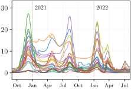 | 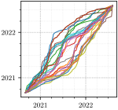 |
| Bayes |

|

|
Why is this prior info useful?

alignment by F–R

Alignment by Bayes
- Two examples of extreme warping by the Fisher-Rao method
- A peak originally located in January 2022 () is shifted back to April 2021 (), spanning nearly seven months, making it difficult to justify.
- A peak from January 2021 () is warped to align with April 2021 (), bridging two temporally distant features (cyan and magenta dots) that have a one-year gap which seems implausible.
Pairwise Alignment
\quad\boldsymbol f_1and \boldsymbol f_2
y_2([t]) = f_2([t]) + \epsilon_2([t])
\qquad\,\,\textsf{additive noise: } \,\, \epsilon_1([t]), \,\, \epsilon_2([t]) \overset{\textrm{i.i.d.}}{\sim} \mathcal{N}(\mathbf{0}, 4^2\ \mathbf{I})
\qquad\,\,\textsf{discretized time: } \,\, [t] \in \mathbb{R}^{T}
\qquad\,\,\textsf{identity matrix: } \,\, \mathbf{I}\in\mathbb{R}^{T\times T}
\quad\boldsymbol y_1and \boldsymbol y_2
Pairwise Alignment
• aligned noisy ob:
\qquad\qquad\tilde{y}_1 = y_1\circ\hat\gamma
• aligned signal:
\qquad\qquad\tilde{f}_1 = f_1\circ\hat\gamma
| Aligned Signals | Warping Fns | |
|---|---|---|
| F–R |
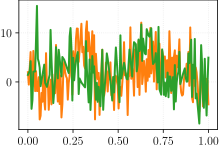
\tilde{y}_1^{\scriptscriptstyle\textrm{(F--R)}} and y_2
|
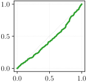
\hat{\gamma}^{\scriptscriptstyle\textrm{(F--R)}}
|
| Bayes |
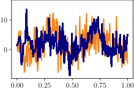
\tilde{y}_1^{\scriptscriptstyle\textrm{(Bayes)}} and y_2
|
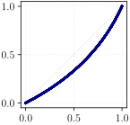
\hat{\gamma}^{\scriptscriptstyle\textrm{(Bayes)}}
|
| Aligned Signals | Warping Fns | |
|---|---|---|
| F–R |
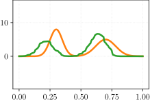
\tilde{f}_1^{\scriptscriptstyle\textrm{(F--R)}} and f_2
|
\hat{\gamma}^{\scriptscriptstyle\textrm{(F--R)}}
|
| Bayes |
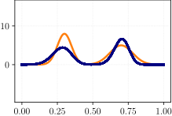
\tilde{f}_1^{\scriptscriptstyle\textrm{(Bayes)}} and f_2
|
\hat{\gamma}^{\scriptscriptstyle\textrm{(Bayes)}}
|
Multiple-function Alignment
\quad\,\,a_{i1},\,\,a_{i,2}\overset{\textrm{i.i.d.}}{\sim} \mathrm{Unif([0.6,1])}
\quad\,\, \mu_{i1} \overset{\textrm{i.i.d.}}{\sim} \mathrm{Unif}([0.2,0.45]),\,\, \mu_{i2} \overset{\textrm{i.i.d.}}{\sim} \mathrm{Unif}([0.55,0.95])
\quad\,\, \sigma_{i1} \overset{\textrm{i.i.d.}}{\sim} \mathrm{Unif}([0.05,0.08]),\,\, \sigma_{i2} \overset{\textrm{i.i.d.}}{\sim} \mathrm{Unif}([0.05,0.12])
\quad f_i’s
The observed noisy signals \{y_i\}_{i=1}^5:
\qquad\,\, additive noise: \,\, \epsilon_i([t])\overset{\textrm{i.i.d.}}{\sim} \mathcal{N}(\mathbf{0}, 0.2^2\ \mathbf{I})
\qquad\,\, discretized time: \,\, [t] \in \mathbb{R}^{T}
\qquad\,\, identity matrix: \,\, \mathbf{I}\in\mathbb{R}^{T\times T}
\quad \,\, y_i’s
Multiple-function Alignment
• aligned noisy obs:
\qquad\qquad\tilde{y}_i = y_i\circ\hat\gamma_i
• aligned signals:
\qquad\qquad\tilde{f}_i = f_i\circ\hat\gamma_i
| Aligned Signals | Warping Fns | |
|---|---|---|
| F–R |
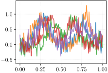
\quad \,\, \tilde{y}_i^{\scriptscriptstyle\textrm{(F--R)}}’s
|
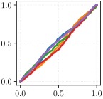
\quad \,\, \hat{\gamma}_i^{\scriptscriptstyle\textrm{(F--R)}}
|
| Bayes |
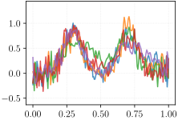
\quad \,\, \tilde{y}_i^{\scriptscriptstyle\textrm{(Bayes)}}’s
|
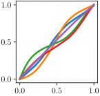
\quad \,\, \hat{\gamma}_i^{\scriptscriptstyle\textrm{(Bayes)}}
|
| Aligned Signals | Warping Fns | |
|---|---|---|
| F–R | 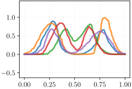 | |
| Bayes | 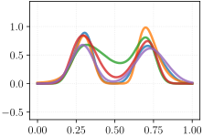 | |
| F–R (noise-free) | 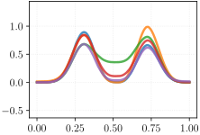 | 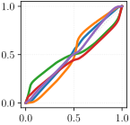 |
Underlying Signal Estimation
Latent underlying signal g(t): g(t) = \sum_{j=1}^3 a_j \exp\left(-\frac{(t - \mu_j)^2}{2 \sigma_j^2}\right)
\qquad\,\,(a_1, a_2, a_3) = (1.5, 1.2, 1.5)
\qquad\,\, (\mu_1, \mu_2, \mu_3) = (0.06, 0.5, 0.94)
\qquad\,\, (\sigma_1, \sigma_2, \sigma_3) = (0.2, 0.15, 0.2)
\quad \,\,f_i’s and \boldsymbol g
\qquad\,\, additive noise: \,\, \epsilon_i([t])\overset{\textrm{i.i.d.}}{\sim} \mathcal{N}(\mathbf{0}, 0.2^2\ \mathbf{I})
\qquad\,\, translation: \,\, e_i\overset{\textrm{i.i.d.}}{\sim} \mathcal{N}(0,0.1^2)
\qquad\,\, scale factor: \,\, c_i \overset{\textrm{i.i.d.}}{\sim} \mathrm{Gamma}(10,0.1)
\qquad\,\, discretized time: \,\, [t] \in \mathbb{R}^{T}
\qquad\,\, identity matrix: \,\, \mathbf{I}\in\mathbb{R}^{T\times T}
\quad \,\, y_i’s
Underlying Signal Estimation
• aligned noisy obs:
\qquad\qquad\tilde{y}_i = y_i\circ\hat\gamma_i
• aligned signals:
\qquad\qquad\tilde{f}_i = f_i\circ\hat\gamma_i
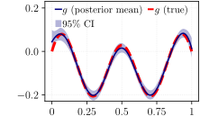
| Aligned Signals | Warping Fns | |
|---|---|---|
| F–R |
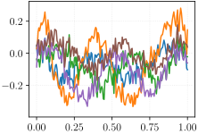
\quad \,\, \tilde{y}_i^{\scriptscriptstyle\textrm{(F--R)}}’s
|
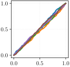
\quad \,\, \hat{\gamma}_i^{\scriptscriptstyle\textrm{(F--R)}}
|
| Bayes |
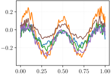
\quad \,\, \tilde{y}_i^{\scriptscriptstyle\textrm{(Bayes)}}’s
|

\quad \,\, \hat{\gamma}_i^{\scriptscriptstyle\textrm{(Bayes)}}
|
| Aligned Signals | Warping Fns | |
|---|---|---|
| F–R | 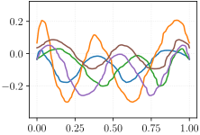 | |
| Bayes | 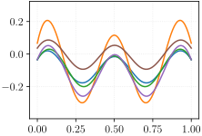 |
|
| F–R (noise-free) | 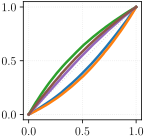 |
Pinching Effect Example
Registration of f_1 toward f_2
Registered signal: \tilde{f}_1 (i.e., f_1 \circ \hat\gamma)
where \hat\gamma minimizing \|\tilde f_1 - f_2\|_{\mathbb{L}^2}.

Recall the CLR transformation: \quad\psi(\gamma)(t) = \log(\dot\gamma(t)) - \int_0^1 \log(\dot\gamma(s))ds.
CLR transformation is a function of \log(\dot \gamma).
Consider h \in H(0,1) and h \sim \mathcal{GP}(\mu_h, \mathcal{K}_h).
Extreme values of \dot\gamma (e.g., 0 or \infty) can be effectively avoided as the changes by confining the magnitude of the covariance operator \mathcal{K}_h that does not allow for large fluctuations.